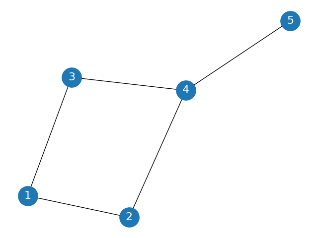

对于下面这样一个网络：

假如我们得到了节点i的嵌入表示zi数据如下：
id,x0,x1,x2,x31,0.5,0.6,0.7,0.82,0.3,0.8,0.3,0.43,0.7,0.9,0.6,0.94,0.2,0.1,0.2,0.35,0.8,0.4,0.3,0.2
为了方便说明，我们来处理一个对节点进行有监督分类的问题。
假设我们要对节点的嵌入表示进行分类
真实的类别如下：
1,3，属于第0类
2,4，属于第1类
5，属于第2类
我们对每个节点经过一个全连接层，我们随机初始化w0,w1,w2三个4维（嵌入向量维数）的权重向量（结果保留两位有效数字，下同）。
w0=[0.17,0.4,−0.14,0.51]
w1=[0.75,−0.04,0.67,−0.18]
w2=[0.53,−0.04,0.4,0.77]
b0,b1,b2=0.05,−0.11,−0.32
wi,bi对应将节点向量转化为节点属于i类的过程的一些权重；
于是对节点z1,我们得到：
h1=[z1w0+b0,z1w1+b1,z1w2+b2]=[0.68,0.57,0.82]
类似地，我们得到
h2=[0.58,0.21,0.23]h3=[0.9,0.62,0.95]h4=[0.25,0.12,0.09]h5=[0.47,0.55,0.4]
softmax函数作为一种归一化函数，可以将一组任意实数转换为一个概率分布，常用于多分类问题，其表达式为：
softmax(zi)=∑j=1Kexp(zj)exp(zi),i=1,…,K
K为分类的类别个数，z_i为实际上是向量z的第i个分量，分类问题中，对于向量z而言,softmax的函数值也就是z属于第i类的概率。
在这里，以h1为例，softmax的表达式可以写成：
softmax(h1[i])=∑j=1Kexp(h1[j])exp(h1[i]),i=1,2,3
h1[i]表示h1中第i个分量。
于是我们将h1,h2,...,h5每个向量传入softmax函数，得到节点属于各类别的概率分布：
p1=[0.33,0.29,0.38]p2=[0.42,0.29,0.29]p3=[0.36,0.27,0.37]p4=[0.37,0.32,0.31]p5=[0.33,0.36,0.31]
于是根据我们上面所提到的，p1中最大的是第3列，也就是说，根据我们的结果，节点1属于第2类的概率最大。
如是我们可以得出，节点2,4属于第0类，节点5属于第1类，节点1,3属于第2类，这个结果和实际分类相差比较大，所以参数w和b需要重新训练。
为此我们引入交叉熵损失函数：
L=−N1i=1,2,..,N∑log∑q=0,1,2exp(hi[q])exp(hi[s])
其中N是节点数量5，s表示节点i所属的真实类别。
我们可以看到后面这个分式实质上就是节点i在真实类别s上对应的softmax函数值；所以实际上损失函数的目标，也就是让节点i被分到真实类别的概率最大化。
L=−N1i=1,2,..,N∑log(pi[s])
之前提到的节点的真实的类别如下：
1,3，属于第0类
2,4，属于第1类
5，属于第2类
前面已经计算出了节点对应的softmax函数值z1到z5
所以，在这里
L=−51(ln(p1[0]p2[1]p3[0]p4[1]p5[2]))=−1/5(ln(0.33×0.29×0.36×0.32×0.31))
我们最终求出此次的损失函数值为-1.1358
此时，我们已经求出了损失函数，下面要做的就是将损失函数对参数求梯度然后反向传播了
∂wt∂L=∂hi∂L∂pi∂hi∂wi∂pi
具体求导过程
最终得出的结果为：
∂wi∂L=n=1∑N(pn(i)−1)xn
其中p(i)指的是向量xn属于第i类的概率(softmax函数值);N为节点数5.
所以
∂w0∂L=(p1[0]−1)z1+(p2[0]−1)z2+...+(p5[0]−1)z5
这样的话，最终得到的梯度结果是一个4维的向量
∂w0∂L=[−1.62,−1.77,−1.29,−1.73]
梯度下降法更新参数：
W:=W−α∂W∂L
w0=[0.17,0.4,−0.14,0.51],假如我们设定α=0.2
w0:=w0−0.2∂W∂L=[0.49,0.75,0.12,0.86]
对其他参数w1,w2也作类似操作。
特别地，对于bi
∂bi∂L=n=1∑N(pn(i)−1)
这样就完成了一轮参数更新。